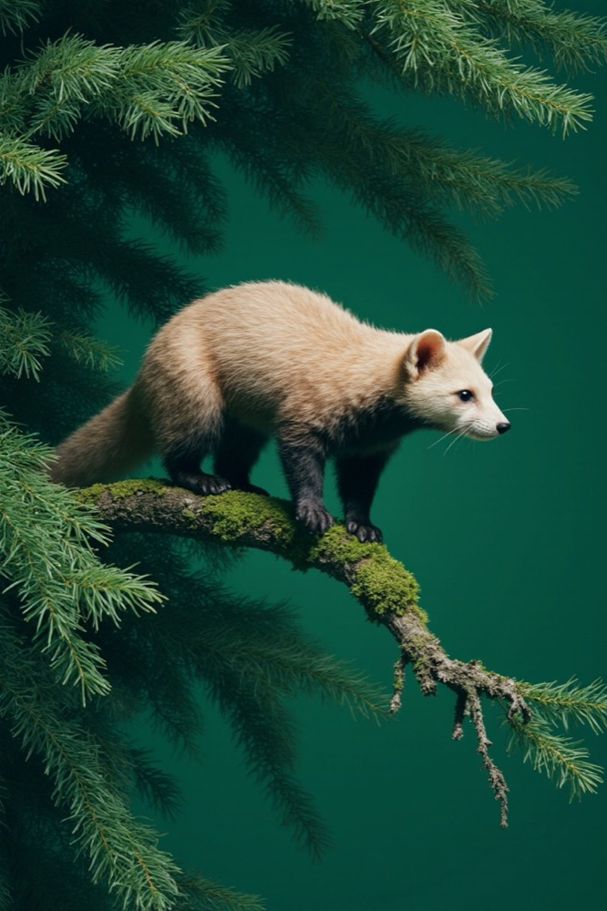

Five tulips
Stems leaning into the same light, each one a little taller than the last.
Plate 02
Field notes · Issue 07
A short story told in type and image, generated in front of you: every glyph traced along its own outline, every photo drawn from its own pixels.
Stems leaning into the same light, each one a little taller than the last.
Plate 02

Out along a mossy branch at first light, gone before the shutter closed twice.
Plate 03
Every frame is made twice: once by the light, once by you.